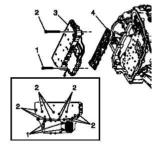
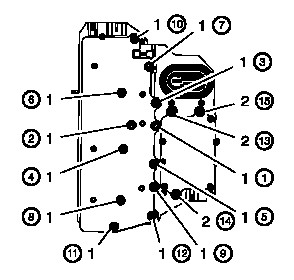

控制电磁阀和变速器控制模块总成的更换
拆卸程序
- 1.变速器控制阀体盖»拆下–控制阀体盖的更换
-
2.输出轴转速传感器电气连接器（2）»断开

- 3.换档位置开关电气连接器（3）»断开
- 4.输入轴转速传感器电气连接器（1）»断开
-
5.控制阀体螺栓（1）M5 x 40.5 [3x]»拆下
- 6.控制阀体螺栓（2）M6 x 97 [12x]»拆下
- 7.带变速器控制模块的控制电磁阀总成（3）»拆下
-
告诫：在拆卸或安装滤清器隔板总成时要小心。破裂或缺失的固定凸舌不能完全将滤清器隔板固定至控制电磁阀总成,会导致损坏或污染。8.控制电磁阀总成滤清器隔板（4）»拆下注意:报废滤板。不可再次使用。
- 9.检查压力开关密封件是否损坏或污染。必要时更换控制电磁阀总成。
- 10.检查筒状盖板螺栓的通孔是否损坏或烧损。任何损坏都可能导致泄漏。必要时进行更换。
安装程序
-
告诫：在拆卸或安装滤清器隔板总成时要小心。破裂或缺失的固定凸舌不能完全将滤清器隔板固定至控制电磁阀总成,会导致损坏或污染。1.安装新的控制电磁阀总成滤清器隔板（4）以防止油液从油封处泄漏。注意:使用新的滤板。
- 2.带变速器控制模块的控制电磁阀总成（3）»安装
- 3.控制阀体螺栓（1, 2）»用手拧紧
-
4.固定12个控制阀体螺栓（1）M6 x 97并且按顺序紧固至10 N•m（89 lb in）。告诫：有关紧固件的告诫
- 5.固定3个控制阀体螺栓（2）M5 x 40.5并且按顺序紧固至7 N•m（62 lb in）。
-
6.输入轴转速传感器电气连接器（1）»连接
- 7.换档位置开关电气连接器（3）»连接
- 8.输出轴转速传感器电气连接器（2）»连接
- 9.变速器控制阀体盖»安装–控制阀体盖的更换
- 10.维修后，参见控制模块参考，以获取编程和设置程序。
- 11.执行变速器自适应值读入。变速器自适应值读入